| CAN (N=10616) |
USA (N=7753) |
Overall (N=18369) |
|
|---|---|---|---|
| Mathematics Percent Correct Points Scored | |||
| Mean (SD) | 49.8 (22.9) | 55.0 (24.9) | 52.0 (23.9) |
| Median [Min, Max] | 50.0 [0, 100] | 56.5 [0, 100] | 52.0 [0, 100] |
| Students Age | |||
| Mean (SD) | 9.91 (0.342) | 10.2 (0.383) | 10.0 (0.390) |
| Median [Min, Max] | 9.92 [6.42, 11.8] | 10.2 [8.58, 12.4] | 10.0 [6.42, 12.4] |
| Sex | |||
| Girl | 5491 (51.7%) | 3860 (49.8%) | 9351 (50.9%) |
| Boy | 5125 (48.3%) | 3893 (50.2%) | 9018 (49.1%) |
| Country | |||
| CAN | 10616 (100%) | 0 (0%) | 10616 (57.8%) |
| USA | 0 (0%) | 7753 (100%) | 7753 (42.2%) |
| Disorderly Behavior during Math Lessons/SCL | |||
| Mean (SD) | 9.63 (1.60) | 9.54 (1.74) | 9.59 (1.66) |
| Median [Min, Max] | 9.67 [6.16, 14.8] | 9.67 [6.16, 14.8] | 9.67 [6.16, 14.8] |
| Student Bullying/SCL | |||
| Mean (SD) | 9.76 (1.72) | 9.90 (1.88) | 9.82 (1.79) |
| Median [Min, Max] | 9.50 [3.81, 12.8] | 9.71 [3.81, 12.8] | 9.71 [3.81, 12.8] |
| Instructional Clarity in Mathematics Lessons/SCL | |||
| Mean (SD) | 10.1 (1.86) | 9.95 (1.97) | 10.0 (1.91) |
| Median [Min, Max] | 10.6 [2.46, 12.1] | 9.79 [2.46, 12.1] | 9.79 [2.46, 12.1] |
| Digital Self-Efficacy/SCL | |||
| Mean (SD) | 10.4 (1.91) | 10.1 (1.88) | 10.2 (1.91) |
| Median [Min, Max] | 10.1 [3.27, 14.0] | 9.68 [3.27, 14.0] | 10.1 [3.27, 14.0] |
| Students Sense of School Belonging/SCL | |||
| Mean (SD) | 9.93 (1.96) | 9.65 (1.91) | 9.81 (1.95) |
| Median [Min, Max] | 9.68 [3.61, 12.9] | 9.68 [3.61, 12.9] | 9.68 [3.61, 12.9] |
| Students Like Learning Mathematics/SCL | |||
| Mean (SD) | 9.90 (1.95) | 9.86 (2.06) | 9.88 (2.00) |
| Median [Min, Max] | 9.76 [4.93, 12.6] | 9.76 [4.93, 12.6] | 9.76 [4.93, 12.6] |
| Students Confident in Mathematics/SCL | |||
| Mean (SD) | 10.2 (2.00) | 10.1 (2.12) | 10.1 (2.05) |
| Median [Min, Max] | 9.81 [3.70, 14.2] | 9.80 [3.70, 14.2] | 9.81 [3.70, 14.2] |
| Number_of_Home_Study_Supports | |||
| Neither Own Room nor Access to the Internet | 284 (2.7%) | 232 (3.0%) | 516 (2.8%) |
| Either Own Room or Access to the Internet | 2617 (24.7%) | 2287 (29.5%) | 4904 (26.7%) |
| Both Own Room and Access to the Internet | 7715 (72.7%) | 5234 (67.5%) | 12949 (70.5%) |
Understanding 4th Grade Math Percent Correct through Student and Teacher Characteristics: A Regression Study using TIMSS 2023
(A Regression-Based Investigation of Student- and Teacher-Level Influences on Math Performance in TIMSS 2023)
Introduction: Research Scenario and Research Questions
I would want to investigate the performance of students in the United States of America (USA) and Canada based on the 2023 TIMSS (Trends in International Mathematics and Science Study) dataset. TIMSS is an international measure of mathematics and science achievements of fourth and eighth grade students. The TIMSS is conducted every four years at the fourth and eighth grade levels. In addition to standardized achievement tests in math and science, TIMSS also collects information of school resources, teacher training/characteristics, home background as well as curriculum implementation. A total of 64 countries participated in the 2023 cycle of TIMSS. This analysis focuses on math performance of 4th grade students using their percentage correct on the TIMSS math achievement test. In this study, student level factors, home factors as well as teacher-level factors are explored to identify their respective impacts on an individual student’s math test score. Specifically, this research seeks to answer the following:
- What proportion of variation the performance of a student on the math test is explained by factors such as gender, country, student confidence among others?
- Are here are any country-level and/or sex differences in math percentage scores? (“How does math performance vary across countries and sexes?”)
- How do various teacher characteristics influence student’s score on the math test?
- Are they are differences in students’ math percentage scores across levels of age and formal education completed?
This report is organized as follows:
- Introduction and Research Question
- Data Analysis
Student-Level Analysis
Data Preparation
Descriptive Statistics and Visualization
Step-wise Regression Analysis
- Difference-in-Differences Analysis
Teacher-Level Analysis
Data Preparation
Descriptive Statistics and Visualization
Step-wise Regression Analysis
- Marginal Contrast Analysis
Data Analysis
Student-Level Analysis
The dataset used in this contained a total of 18369 participants after data cleaning. The dataset had a total of 373 variables but only 13 are reported below:
Student_ID: Student Identifier
Country: Country of Participation (CAN = 1, USA = 2)
Sex: Sex/Gender (1 = Girl, 2 = Boy)
Age : Age of student
Number_of_Home_Study_Supports: Derived from subscale measuring resources available to the student at home.
Disorderly_Behavior: Scale score from the subscale measuring disorderly behavior during math lessons.
Instructional_Clarity: Scale score from the subscale measuring instructional clarity in mathematics lessons.
Digital_Self_Efficacy: Scale score from the subscale measuring digital self-efficacy.
Sense_of_School_Belonging: Scale score from the subscale measuring students sense of school belonging.
Student_Bullying: Scale score from the subscale measuring student bullying.
Like_Learning_Math: Scale score from the subscale measuring if students like learning mathematics.
Confident_in_Math: Scale score from the subscale measuring students confidence in mathematics.
Math_Percent_Correct: Students’ percent correct on the 2023 TIMSS Math Achievement Test.
The scale scores reported were derived following several steps including; item parameter estimation, item fit evaluation among others (Yin and Reynolds 2024).
Data Preparation
The data preparation stage began with renaming the columns in the Home_Student dataset with more descriptive names. After this, the dataset is cleaned by removing any rows containing missing values resulting in a final dataset with only complete cases as well as specifying categorical variables and dropping any unused levels.
Descriptive Statistics
The total sample size of the Canada and U.S.A. 4th grade students was 22806. However, due to non-response, the sample size used for this analysis was 18369; 9351 girls and 9018 boys. There were more Canadian 4th Grade students compared to the U.S.A. in the sample (Figure 1). The overall mean age was 10 years (S.D. = 0.390) and the average sample class score was 52% (S.D. = 0.390). About 51% of the entire sample was female with Canada accounting for about 52% of the total population of females. A comprehensive summary of the sample information can be seen in Table 1. The distribution of the math scores for each country and sex subgroup can be described as bi-modal as shown in Figure 2. As shown in Figure 3, it can be observed that U.S.A students had a higher Math score average with boys also having a higher average score. Students who had access to both their own rooms and internet access seemed to have a better average score compared to those who had neither (Figure 3 (d)). As shown in Figure 4, the correlations between the predictors and math score were in the moderate to low range.
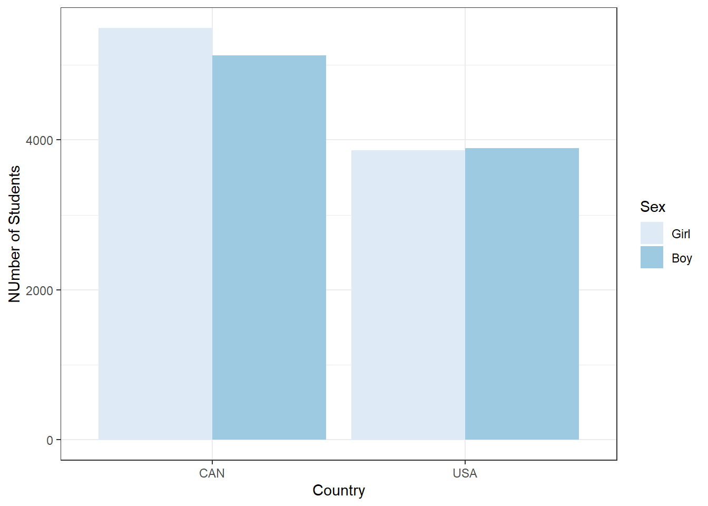
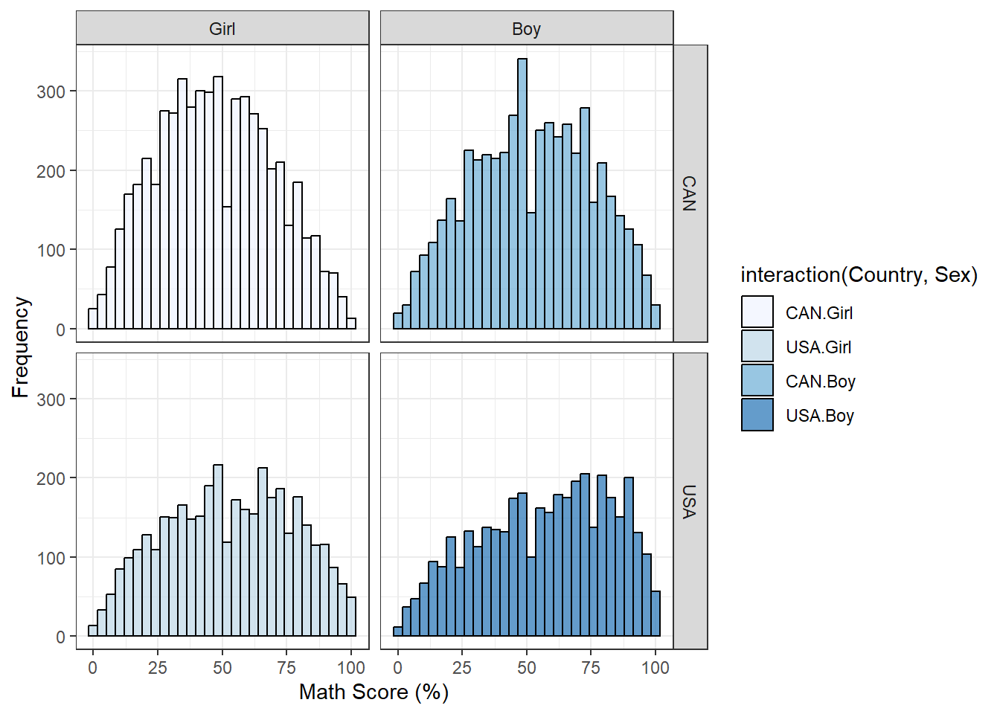
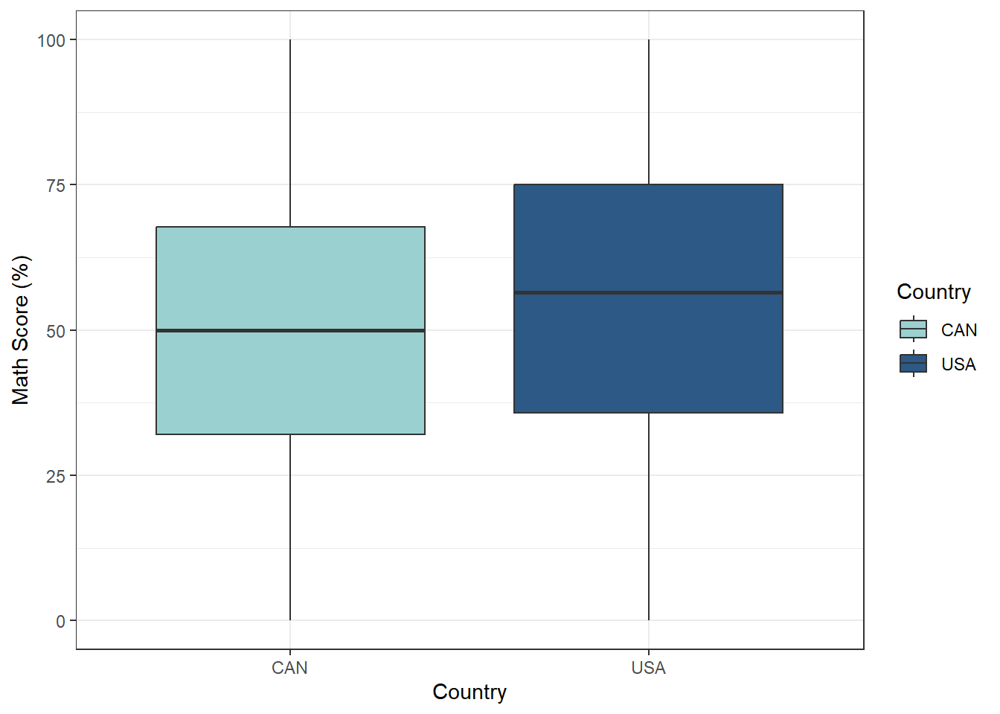
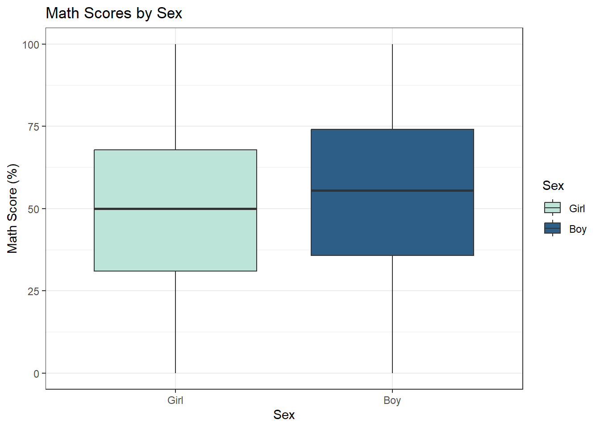
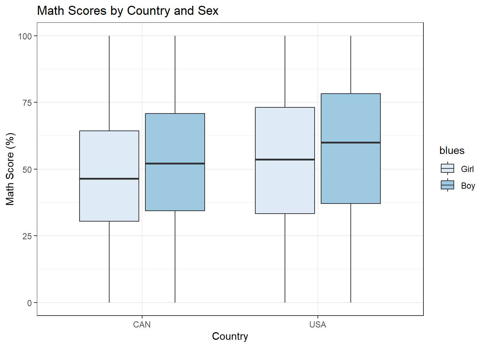
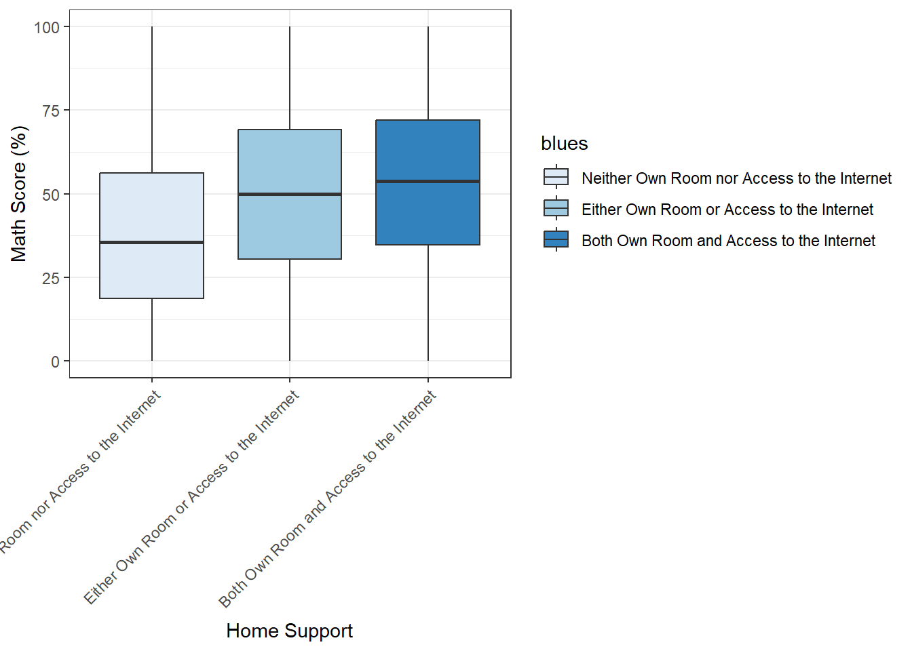
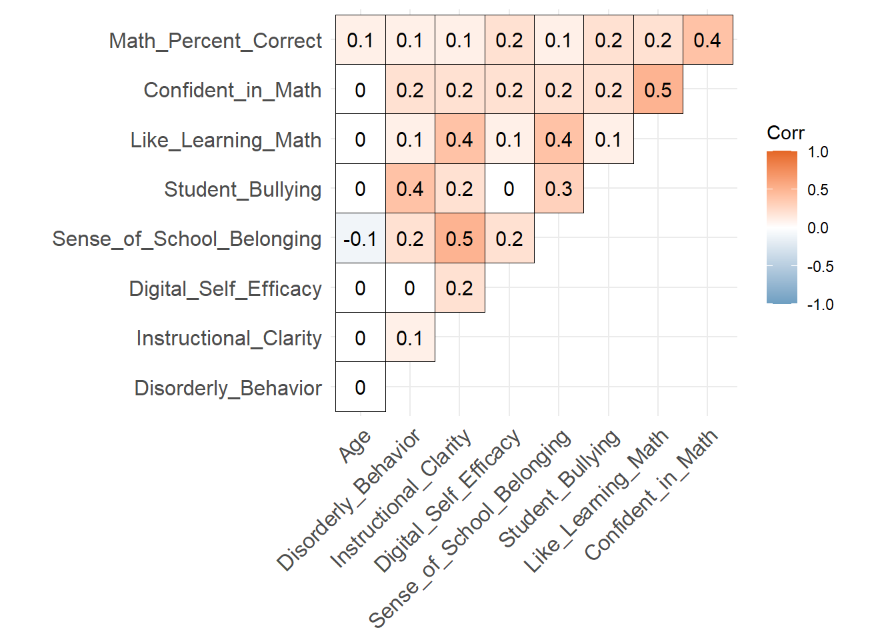
Regression Analysis
A step-wise regression model was estimated to evaluate whether the independent variables (Country, Sex, Age, Disorderly_Behavior, Instructional_Clarity, Digital_Self_Efficacy, Student_Bullying, Like_Learning_Math, Confident_in_Math, and Number_of_Home_Study_Supports) could predict the dependent variable, Math_Percent_Correct . The linear relationship between independent variables and math score was found to be statistically significant \(F(11, 18357) = 439.39,\ p < .001\). Appoximately \(21\%\) of the total variation in math percent score was account for by its linear relationship with the predictors, \(R^2 = .21,\ R^2_{adj}=.21\). Among the predictors, instructional clarity had a statistically non-significant and negative effect on math percentage value \((\beta = -.16,\ p < .001)\), suggesting that greater instructional clarity was not associated with higher math percent values in this model over and above all other predictors. The effect of Country (U.S.A.) was statistically significant and positive \((\beta = 5.58,\ p < .001)\), suggesting that holding all other predictors unchanged, 4th grade students scored 5.58% higher than those in Canada. The effect of Sex (boy) was also statistically significant and positive \((\beta = 2.01,\ p < .001)\), suggesting that controlling for all other predictors, boys in the 4th grade scored 2.01% higher than girls. Interestingly, Like_Learning_Math was found to have statistically significant and negative effect on math percent score \((\beta = -.97,\ p < .001)\). This suggests that partialling out the effects of all other predictors, and a unit increase in a student whether a student likes learning math results in a -0.97% decrease in math percent score. All other predictors in the model had a statistically significant and positive effect on math percent score. This suggests that holding all other predictions unchanged, an increase in their respective values is expected lead to an increase in math percentage score.
The details of the results from the step-wise analysis are presented in Table 2. The predictor Confident_in_Math had the largest effect on the math percent score followed by Number_of_Home_Study_Supports_Either Table 2 (d). The predictors used in this analysis do not exhibit multicollinearity as shown in Table 2 (c). A look at the residual plots in Figure 5 show a slight non-linearity with possible non-normality from the Q-Q plot.
| term | estimate | std.error | statistic | p.value |
|---|---|---|---|---|
| (Intercept) | -35.487 | 4.634 | -7.658 | 0.000 |
| CountryUSA | 5.584 | 0.346 | 16.123 | 0.000 |
| SexBoy | 2.006 | 0.320 | 6.279 | 0.000 |
| Age | 1.112 | 0.437 | 2.546 | 0.011 |
| Disorderly_Behavior | 0.603 | 0.102 | 5.903 | 0.000 |
| Instructional_Clarity | -0.164 | 0.092 | -1.779 | 0.075 |
| Digital_Self_Efficacy | 1.054 | 0.087 | 12.060 | 0.000 |
| Student_Bullying | 1.021 | 0.097 | 10.582 | 0.000 |
| Like_Learning_Math | -0.968 | 0.098 | -9.892 | 0.000 |
| Confident_in_Math | 4.773 | 0.094 | 50.695 | 0.000 |
| Number_of_Home_Study_SupportsEither Own Room or Access to the Internet | 8.055 | 0.990 | 8.140 | 0.000 |
| Number_of_Home_Study_SupportsBoth Own Room and Access to the Internet | 10.088 | 0.965 | 10.451 | 0.000 |
| r.squared | adj.r.squared | sigma | statistic | p.value | df | logLik | AIC | BIC | deviance | df.residual | nobs |
|---|---|---|---|---|---|---|---|---|---|---|---|
| 0.208 | 0.208 | 21.298 | 439.394 | 0 | 11 | -82242.15 | 164510.3 | 164611.9 | 8326823 | 18357 | 18369 |
| GVIF | Df | GVIF^(1/(2*Df)) | |
|---|---|---|---|
| Country | 1.185 | 1 | 1.088 |
| Sex | 1.033 | 1 | 1.017 |
| Age | 1.174 | 1 | 1.084 |
| Disorderly_Behavior | 1.160 | 1 | 1.077 |
| Instructional_Clarity | 1.254 | 1 | 1.120 |
| Digital_Self_Efficacy | 1.123 | 1 | 1.060 |
| Student_Bullying | 1.213 | 1 | 1.102 |
| Like_Learning_Math | 1.551 | 1 | 1.245 |
| Confident_in_Math | 1.508 | 1 | 1.228 |
| Number_of_Home_Study_Supports | 1.039 | 2 | 1.010 |
| Estimate | |
|---|---|
| Intercept | -0.194 |
| Country_USA | 0.117 |
| Sex_Boy | 0.042 |
| Age | 0.018 |
| Disorderly_Behavior | 0.042 |
| Instructional_Clarity | -0.013 |
| Digital_Self_Efficacy | 0.084 |
| Student_Bullying | 0.077 |
| Like_Learning_Math | -0.081 |
| Confident_in_Math | 0.409 |
| Number_of_Home_Study_Supports_Either | 0.168 |
| Number_of_Home_Study_Supports_Both | 0.211 |
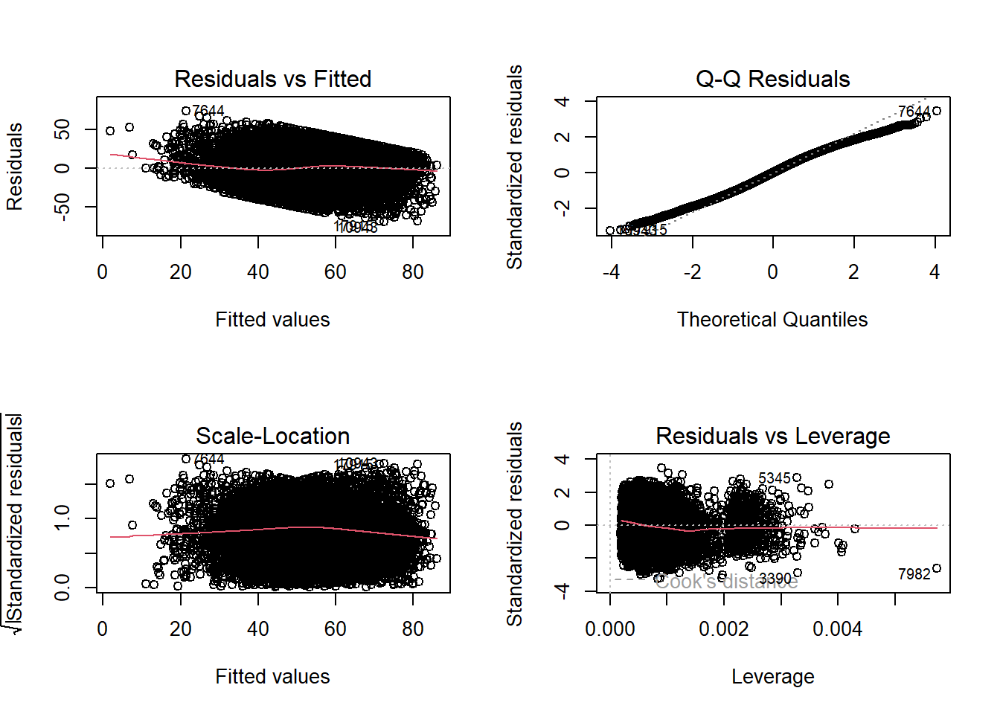
Difference-in-Difference Analysis on Combinations of Sex and Country
This section of the analysis focuses on whether there are sex and/or country specific differences in the performance of the 4th grade students on the TIMSS math test. To do this, a differences-in-differences analysis was performed on various combinations of the country and sex variables. From Table 3 and Figure 6, it can be observed that holding all other predictors unchanged, the predicted average math percent value for a typical 4th grade student in the U.S.A is higher than in Canada. Also, a typical Canadian or U.S.A 4th grade boy seem to have a higher predicted average math percent score than their girl counterparts. A marginal contrast analysis (Table 3 (b)) was further performed to evaluate if these differences were statistically significant. This analysis revealed that the differences in predicted scores across all combinations of sex and country were statistically significant. In the U.S.A, boys had significantly higher predicted math scores than girls \((\text{difference}= 2.01,\ 95\% \text{ CI } [1.38, 2.63],\ t(18357) = 6.28,\ p < .001)\). Boys in Canada also had a significantly higher predicted math scores than girls\((\text{difference}= 2.01,\ 95\% \text{ CI } [1.38, 2.63],\ t(18357) = 6.28,\ p < .001)\). When comparing the average predicted scores of girls in the U.S.A. to those in Canada, the girls in the U.S.A had a significantly higher score \((\text{difference}= 5.58,\ 95\% \text{ CI } [4.91, 6.26],\ t(18357) = 16.12,\ p < .001)\). Similarly, girls in the U.S.A. also outperformed the boys in Canada \((\text{difference}= -3.58,\ 95\% \text{ CI } [–4.51, –2.65],\ t(18357) = -7.53,\ p < .001)\). Additionally, boys in the U.S.A scored significantly higher than the boys in Canada \((\text{difference}= 5.58,\ 95\% \text{ CI } [4.91, 6.26],\ t(18357) = 16.12,\ p < .001)\). In the same vein, boys in the U.S.A. also outperformed the girls in Canada by the largest margin \((\text{difference}= 7.59,\ 95\% \text{ CI } [6.67, 8.51],\ t(18357) = 16.25,\ p < .001)\).
These findings suggest that while gender differences exist, the national level factors may play a more substantial role in the TIMSS math percent score of 4th grade students. Further research should explore some potential national level contributors like curriculum standards.
| Sex | Country | Mean | SE | CI_low | CI_high | t | df |
|---|---|---|---|---|---|---|---|
| Girl | CAN | 45.416 | 0.400 | 44.632 | 46.199 | 113.611 | 18357 |
| Girl | USA | 51.000 | 0.422 | 50.172 | 51.828 | 120.766 | 18357 |
| Boy | CAN | 47.422 | 0.404 | 46.630 | 48.214 | 117.353 | 18357 |
| Boy | USA | 53.006 | 0.422 | 52.179 | 53.833 | 125.643 | 18357 |
| Level1 | Level2 | Difference | SE | CI_low | CI_high | t | df | p |
|---|---|---|---|---|---|---|---|---|
| Girl, USA | Girl, CAN | 5.584 | 0.346 | 4.905 | 6.263 | 16.123 | 18357 | 0 |
| Boy, CAN | Girl, CAN | 2.006 | 0.320 | 1.380 | 2.633 | 6.279 | 18357 | 0 |
| Boy, USA | Girl, CAN | 7.590 | 0.467 | 6.675 | 8.506 | 16.249 | 18357 | 0 |
| Boy, CAN | Girl, USA | -3.577 | 0.475 | -4.509 | -2.646 | -7.527 | 18357 | 0 |
| Boy, USA | Girl, USA | 2.006 | 0.320 | 1.380 | 2.633 | 6.279 | 18357 | 0 |
| Boy, USA | Boy, CAN | 5.584 | 0.346 | 4.905 | 6.263 | 16.123 | 18357 | 0 |
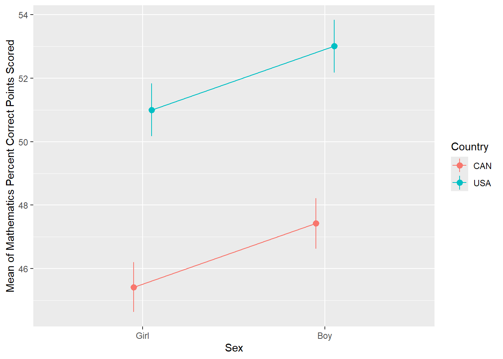
Teacher-Level Analysis
The dataset used in this contained a total of 18194 participants after data cleaning. The dataset had a total of 538 variables but only 14 are reported below:
Teacher_ID: Teacher Identifier
Years_Teaching: Years teacher has been teaching
Sex: Sex/Gender of teacher (1: Female; 2: Male; 3: Other)
Age: Age of Teacher (1: Under 25; 2: 25–29; 3: 30–39; 4: 40–49; 5: 50–59; 6: 60 or more)
Formal_Educ: Level of formal education teacher has completed (1: Did not complete Upper secondary education—ISCED Level 3; 2: Upper secondary education—ISCED Level 3 (have not completed postsecondary or tertiary education); 3: Post-secondary, non-tertiary education—ISCED Level 4; 4: Short-cycle tertiary education—ISCED Level 5; 5: Bachelor’s or equivalent level—ISCED Level 6; 6: Master’s or equivalent level—ISCED Level 7; 7: Doctor or equivalent level—ISCED Level 8)
Class_Size: Number of students in the class.
Homework_Freq: How often math homework is assigned (1: I do not assign mathematics homework; 2: Less than once a week; 3: 1 or 2 times a week; 4: 3 or 4 times a week; 5: Every day)
Academic_Success: Scale score from the subscale measuring school emphasis on academic success-teacher.
Safe_Orderly_Schools : Scale score from the subscale measuring safe and orderly schools-teacher.
Job_Satis : Scale score from the subscale measuring teachers job satisfaction.
Student_not_Ready: Scale score from the subscale measuring teaching limited by student not ready.
TMath_Major : Teachers majored in education and mathematics (1: Major in Edu and Math; 2: Major in Edu but not Math; 3: Major in Math but not Edu; 4: All other Majors; 5: No Formal Edu Beyond Upper Secondary).
Instruction_Hours: Mathematics instruction hours per week
Math_Percent_Correct: Students’ percent correct on the 2023 TIMSS Math Achievement Test.
The scale scores reported were derived following several steps including; item parameter estimation, item fit evaluation among others (Yin and Reynolds 2024).
Data Preparation
As with the Home_Student dataset, the data preparation for the Teacher_Student dataset started with renaming the original variables with more descriptive names. After this, the dataset is cleaned by removing any rows containing missing values resulting in a final dataset with only complete cases as well as specifying categorical variables and dropping any unused levels.
Descriptive Statistics
The total sample size of the Canada and U.S.A. 4th grade was 26293. However, due to non-response, the sample size used for this analysis was 18194; 15612 females, 2430 males and 152 other. The average math percent score for the 4th grade students were similar for male (M = 50.4, S.D. = 24.4) and female teachers (M = 50.4, S.D. = 24.1) with “other” having a relatively lower average (M = 45.5, S.D. = 23.7) (see Figure 8 (d)). A majority of the teachers (93.5%) were between 25 - 59 years old with the rest being under 25 years (3.8%) or over 60 years (2.7%). With regards to the level of formal education, 69.1% of the teachers had a bachelor’s degree or equivalent followed by those with a master’s degree or equivalent at 30.4%. As shown in Figure 7, only teachers between 30 - 39 years and 50 - 59 years had PhD’s or equivalent. Table 4 provides a comprehensive summary of the descriptive statistics of the sample. As another aim of this analysis is to identify differences in students performance based on a teacher’s level of education and age, these variables were further investigated through graphical representations. From Figure 8 (a), students who were taught by teachers with at least higher levels of formal education - particularly those with a master’s or doctoral degrees- tend to have a slightly higher median score across most of the age groups with the exception of doctoral degree holders between 30 - 39 years. It can also be seen that some subgroups had few to no data points with one subgroup having an outlier. Also, student percentage scores seem relatively consistent across the various teacher age group. Students taught by teachers under 25 years or above 60 years have a slightly higher median score (Figure 8 (b)). Also, the median scores for the 4th grade students as well as the overall score distribution tend to increase with higher formal education levels (Figure 8 (c)). This suggests a positive association between teacher qualifications and percent correct. As can be seen in Figure 9, all the predictors have a low positive association with the dependent variable. There are also a few predictors that have a moderate positive relationship with each other. The variance inflation factor will be examined to ensure there is no multicollinearity among the predictors. The lack of a strong association with the dependent variable suggests there may be better factors to explain the variation in math percentage scores.
| Female (N=15612) |
Male (N=2430) |
Other (N=152) |
Overall (N=18194) |
|
|---|---|---|---|---|
| Mathematics Percent Correct Points Scored | ||||
| Mean (SD) | 50.4 (24.1) | 50.4 (24.4) | 45.5 (23.7) | 50.4 (24.1) |
| Median [Min, Max] | 50.0 [0, 100] | 50.0 [0, 100] | 42.3 [5.26, 96.3] | 50.0 [0, 100] |
| Age of Teacher | ||||
| Under 25 | 660 (4.2%) | 23 (0.9%) | 0 (0%) | 683 (3.8%) |
| 25–29 | 2020 (12.9%) | 200 (8.2%) | 13 (8.6%) | 2233 (12.3%) |
| 30–39 | 4154 (26.6%) | 557 (22.9%) | 45 (29.6%) | 4756 (26.1%) |
| 40–49 | 5100 (32.7%) | 795 (32.7%) | 45 (29.6%) | 5940 (32.6%) |
| 50–59 | 3357 (21.5%) | 711 (29.3%) | 21 (13.8%) | 4089 (22.5%) |
| 60 or more | 321 (2.1%) | 144 (5.9%) | 28 (18.4%) | 493 (2.7%) |
| Sex of Teacher | ||||
| Female | 15612 (100%) | 0 (0%) | 0 (0%) | 15612 (85.8%) |
| Male | 0 (0%) | 2430 (100%) | 0 (0%) | 2430 (13.4%) |
| Other | 0 (0%) | 0 (0%) | 152 (100%) | 152 (0.8%) |
| Level of Formal Education Completed | ||||
| Post-secondary, non-tertiary education | 9 (0.1%) | 0 (0%) | 0 (0%) | 9 (0.0%) |
| Short-cycle tertiary education | 6 (0.0%) | 0 (0%) | 0 (0%) | 6 (0.0%) |
| Bachelor’s or equivalent | 10894 (69.8%) | 1525 (62.8%) | 151 (99.3%) | 12570 (69.1%) |
| Master’s or equivalent | 4661 (29.9%) | 866 (35.6%) | 1 (0.7%) | 5528 (30.4%) |
| Doctor or equivalent | 42 (0.3%) | 39 (1.6%) | 0 (0%) | 81 (0.4%) |
| Years of Teaching | ||||
| Mean (SD) | 14.1 (8.70) | 15.9 (8.78) | 17.2 (10.0) | 14.4 (8.75) |
| Median [Min, Max] | 14.0 [1.00, 43.0] | 16.0 [1.00, 37.0] | 17.0 [1.00, 40.0] | 14.0 [1.00, 43.0] |
| Number of Students in Class | ||||
| Mean (SD) | 23.6 (5.88) | 24.3 (5.35) | 22.8 (4.13) | 23.7 (5.80) |
| Median [Min, Max] | 24.0 [1.00, 117] | 25.0 [4.00, 46.0] | 25.0 [14.0, 27.0] | 24.0 [1.00, 117] |
| Homework Frequency | ||||
| I do not assign mathematics homework | 5146 (33.0%) | 767 (31.6%) | 56 (36.8%) | 5969 (32.8%) |
| Less than once a week | 3166 (20.3%) | 400 (16.5%) | 47 (30.9%) | 3613 (19.9%) |
| 1 or 2 times a week | 3931 (25.2%) | 440 (18.1%) | 13 (8.6%) | 4384 (24.1%) |
| 3 or 4 times a week | 2193 (14.0%) | 500 (20.6%) | 20 (13.2%) | 2713 (14.9%) |
| Every day | 1176 (7.5%) | 323 (13.3%) | 16 (10.5%) | 1515 (8.3%) |
| School Emphasis on Teacher's Academic Success | ||||
| Mean (SD) | 9.90 (2.17) | 10.2 (2.65) | 9.17 (3.33) | 9.93 (2.26) |
| Median [Min, Max] | 9.72 [4.33, 17.0] | 10.1 [0.698, 17.0] | 8.27 [5.70, 17.0] | 9.72 [0.698, 17.0] |
| Safe and Orderly Schools-Teacher | ||||
| Mean (SD) | 9.45 (2.23) | 9.68 (2.30) | 7.89 (2.35) | 9.46 (2.24) |
| Median [Min, Max] | 9.32 [4.16, 13.1] | 9.32 [4.16, 13.1] | 7.86 [4.16, 13.1] | 9.32 [4.16, 13.1] |
| Teachers Job Satisfaction | ||||
| Mean (SD) | 9.41 (2.14) | 9.68 (2.14) | 9.80 (2.25) | 9.45 (2.14) |
| Median [Min, Max] | 9.59 [4.59, 12.3] | 9.59 [4.59, 12.3] | 9.05 [6.29, 12.3] | 9.59 [4.59, 12.3] |
| Teaching Limited by Student Not Ready | ||||
| Mean (SD) | 9.00 (1.66) | 9.24 (1.68) | 8.70 (1.10) | 9.03 (1.66) |
| Median [Min, Max] | 8.86 [3.23, 15.2] | 8.86 [4.75, 15.2] | 9.33 [6.65, 13.6] | 8.86 [3.23, 15.2] |
| Teachers Majored in Education and Mathematics | ||||
| Major in Edu and Math | 1856 (11.9%) | 438 (18.0%) | 47 (30.9%) | 2341 (12.9%) |
| Major in Edu but not Math | 11429 (73.2%) | 1440 (59.3%) | 64 (42.1%) | 12933 (71.1%) |
| Major in Math but not Edu | 264 (1.7%) | 86 (3.5%) | 0 (0%) | 350 (1.9%) |
| All other Majors | 2063 (13.2%) | 466 (19.2%) | 41 (27.0%) | 2570 (14.1%) |
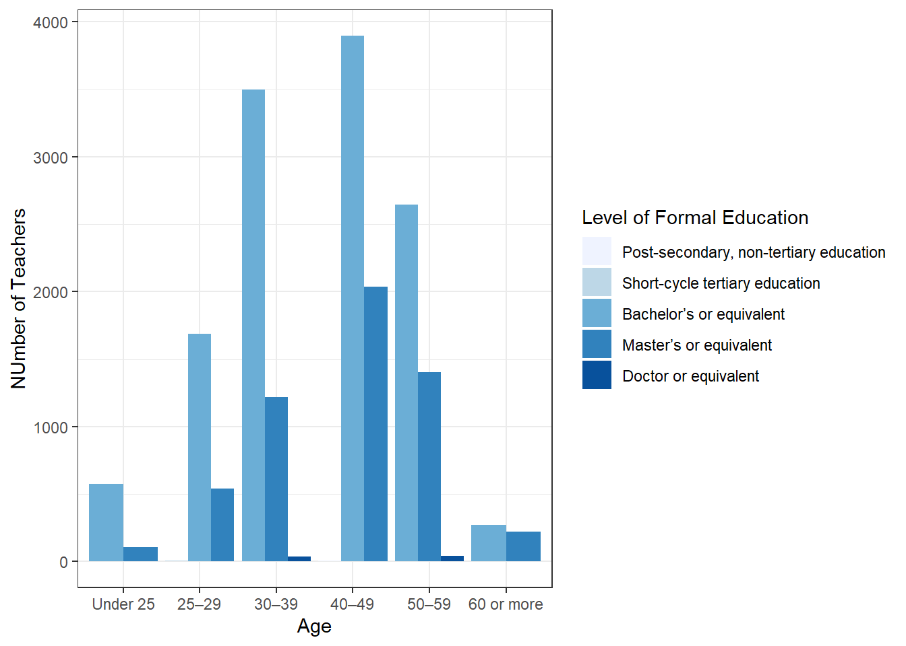
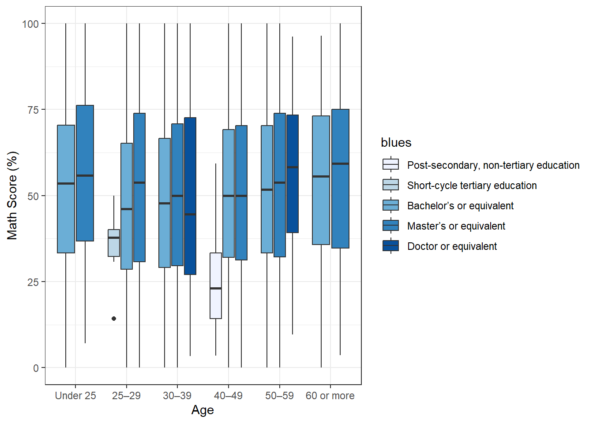
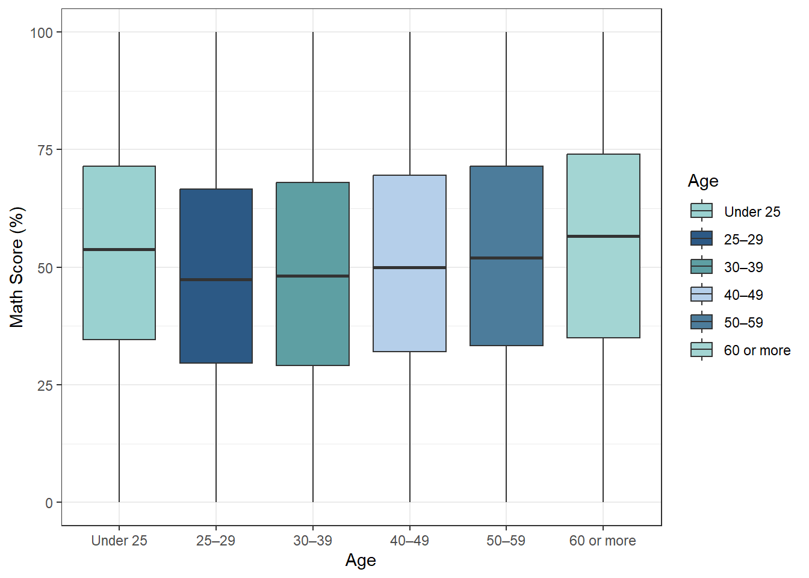
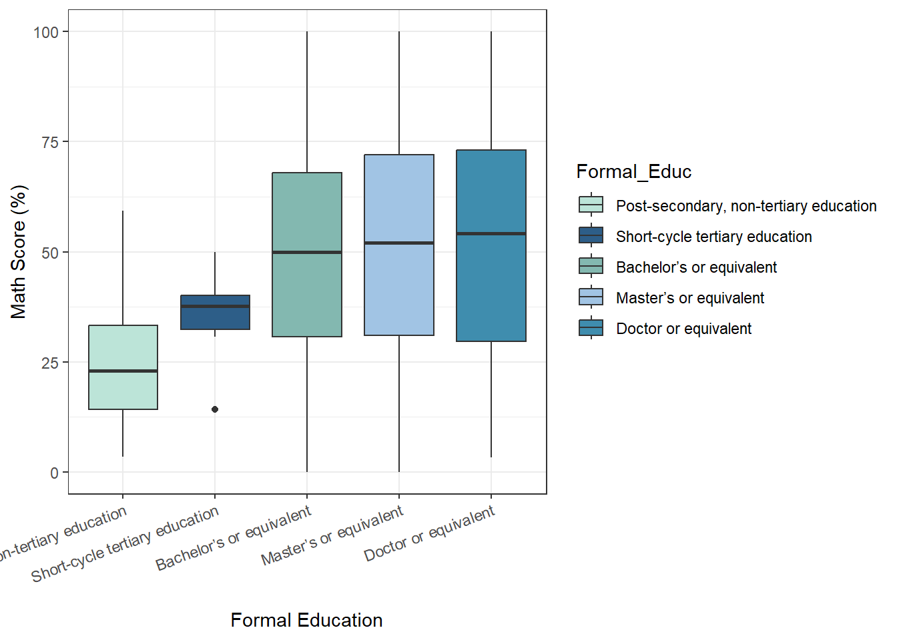
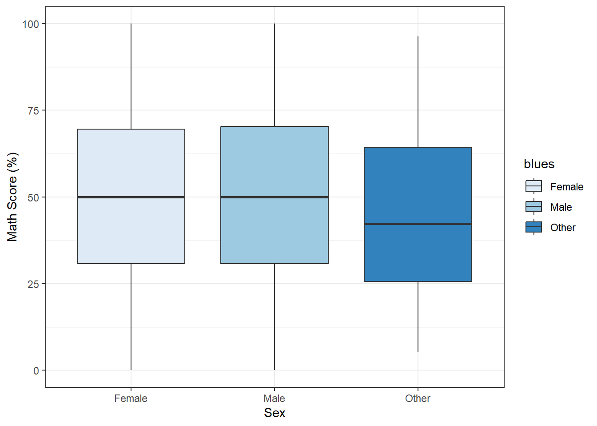
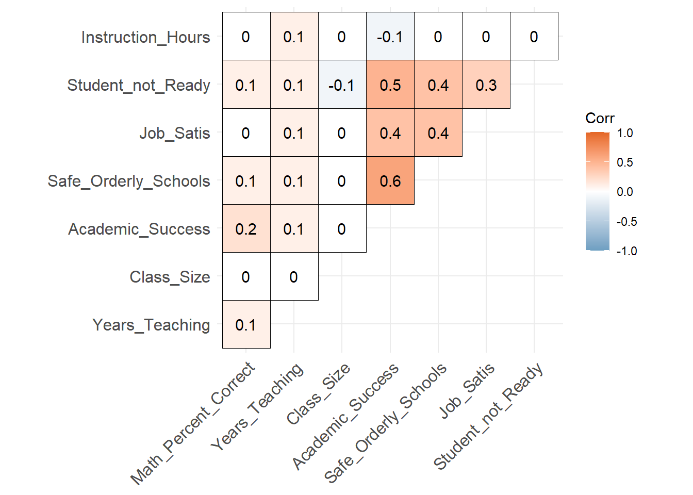
Regression Analysis
A step-wise regression model was estimated to evaluate whether the independent variables (Years_Teaching, Sex, Age, Formal_Educ, Class_Size, Homework_Freq, Academic_Success, Safe_Orderly_Schools, Job_Satis, Student_not_Ready, Math_Major and Instruction_Hours) could predict the dependent variable, Math_Percent_Correct . The linear relationship between independent variables and math score was found to be statistically significant \(F(25, 18168) = 35.51,\ p < .001\), but it explained a small proportion of variance in students’ math percentage scores. \((R^2 = .05,\ R^2_{adj}=.05)\). Among the predictors, instructional clarity had a statistically non-significant and negative effect on math percentage value \((\beta = -.16,\ p < .001)\), suggesting that greater instructional clarity was not associated with higher math percent values in this model over and above all other predictors. Compared to teachers with post-secondary, non-tertiary education, the effect of holding a bachelor’s or equivalent degree was statistically significant and positive \((\beta = 15.93,\ p = .043)\), as were the effects of holding a master’s or equivalent \((\beta = 17.16,\ p = .030)\) and a doctoral or equivalent degree \((\beta = 17.54,\ p = .035)\). The effect of holding a short-cycle tertiary education degree was positive but not statistically significant \((\beta = 6.47,\ p = .603)\). Relative to teachers under 25, the effects of being aged 25–29 \((\beta = -4.21,\ p < .001)\), 30–39 \((\beta = -4.80,\ p < .001)\), 40–49 \((\beta = -4.44,\ p < .001)\), and 50–59 \((\beta = -4.59,\ p < .001)\) were statistically significant and negative. The effect of being aged 60 or more was negative but not statistically significant \((\beta = -1.79,\ p = .266)\). Regarding the the other predictors, Years of teaching experience, class size, homework frequency (excluding “less than once a week”), academic success, and student readiness had statistically significant effects. In contrast, the effects of sex, instruction hours, and most math major categories were not statistically significant. The details of the results from the step-wise analysis are presented in Table 5 (a) and Table 5 (b). The categories of formal education levels had the largest effect on students’ math percentage scores Table 5 (d). The predictors used in this analysis do not exhibit multicollinearity as shown in Table 5 (c).
The “Residuals vs Fitted” plot in Figure 10 shows that the residuals are approximately symmetrically distributed around zero across the range of fitted values, although there is a slight funnel shape, suggesting mild heteroscedasticity. From the Q-Q plot, some deviations from the diagonal line can be seen particularly at the tails suggesting slight departures from normality. A look at the “Scale-Location” plot reveals a fairly consistent spread of the standardized residuals with a slight vurvature at the extremes suggesting some heteroscedasticity. The “Residuals vs Leverage” plot also exhibited a few cases with high leverage nut a majority of observations were within an acceptable leverage range. Overall, a linear regression model seems adequate as the assumptions have been met to a large extent.
| term | estimate | std.error | statistic | p.value |
|---|---|---|---|---|
| (Intercept) | 10.629 | 8.066 | 1.318 | 0.188 |
| Years_Teaching | 0.126 | 0.035 | 3.630 | 0.000 |
| SexMale | -0.954 | 0.524 | -1.821 | 0.069 |
| SexOther | -2.961 | 1.946 | -1.521 | 0.128 |
| Age25–29 | -4.207 | 1.040 | -4.043 | 0.000 |
| Age30–39 | -4.796 | 1.012 | -4.740 | 0.000 |
| Age40–49 | -4.445 | 1.103 | -4.030 | 0.000 |
| Age50–59 | -4.594 | 1.266 | -3.627 | 0.000 |
| Age60 or more | -1.792 | 1.612 | -1.112 | 0.266 |
| Formal_EducShort-cycle tertiary education | 6.473 | 12.460 | 0.519 | 0.603 |
| Formal_EducBachelor’s or equivalent | 15.930 | 7.878 | 2.022 | 0.043 |
| Formal_EducMaster’s or equivalent | 17.157 | 7.884 | 2.176 | 0.030 |
| Formal_EducDoctor or equivalent | 17.543 | 8.317 | 2.109 | 0.035 |
| Class_Size | 0.189 | 0.031 | 6.099 | 0.000 |
| Homework_FreqLess than once a week | 0.458 | 0.501 | 0.915 | 0.360 |
| Homework_Freq1 or 2 times a week | 3.250 | 0.474 | 6.853 | 0.000 |
| Homework_Freq3 or 4 times a week | 2.174 | 0.566 | 3.842 | 0.000 |
| Homework_FreqEvery day | 2.930 | 0.700 | 4.185 | 0.000 |
| Academic_Success | 1.574 | 0.101 | 15.644 | 0.000 |
| Safe_Orderly_Schools | -0.366 | 0.101 | -3.604 | 0.000 |
| Job_Satis | -0.644 | 0.093 | -6.941 | 0.000 |
| Student_not_Ready | 1.376 | 0.125 | 11.039 | 0.000 |
| Math_MajorMajor in Edu but not Math | 1.014 | 0.540 | 1.880 | 0.060 |
| Math_MajorMajor in Math but not Edu | 4.197 | 1.365 | 3.075 | 0.002 |
| Math_MajorAll other Majors | -0.213 | 0.681 | -0.312 | 0.755 |
| Instruction_Hours | 0.159 | 0.095 | 1.667 | 0.096 |
| r.squared | adj.r.squared | sigma | statistic | p.value | df | logLik | AIC | BIC | deviance | df.residual | nobs |
|---|---|---|---|---|---|---|---|---|---|---|---|
| 0.047 | 0.045 | 23.553 | 35.505 | 0 | 25 | -83282.86 | 166619.7 | 166830.6 | 10078858 | 18168 | 18194 |
| GVIF | Df | GVIF^(1/(2*Df)) | |
|---|---|---|---|
| Years_Teaching | 3.047 | 1 | 1.746 |
| Sex | 1.069 | 2 | 1.017 |
| Age | 3.345 | 5 | 1.128 |
| Formal_Educ | 1.122 | 4 | 1.014 |
| Class_Size | 1.059 | 1 | 1.029 |
| Homework_Freq | 1.205 | 4 | 1.024 |
| Academic_Success | 1.693 | 1 | 1.301 |
| Safe_Orderly_Schools | 1.699 | 1 | 1.304 |
| Job_Satis | 1.297 | 1 | 1.139 |
| Student_not_Ready | 1.407 | 1 | 1.186 |
| Math_Major | 1.129 | 3 | 1.020 |
| Instruction_Hours | 1.057 | 1 | 1.028 |
| Estimate | |
|---|---|
| Intercept | -0.292 |
| Years_Teaching | 0.046 |
| Sex_Male | -0.020 |
| Sex_Other | -0.061 |
| Age(25–29) | -0.087 |
| Age (30–39) | -0.099 |
| Age (40–49) | -0.092 |
| Age (50–59) | -0.095 |
| Age (60 or more) | -0.037 |
| Formal_Educ (Short-cycle tertiary education) | 0.134 |
| Formal_Educ (Bachelor’s or equivalent) | 0.330 |
| Formal_Educ (Master’s or equivalent) | 0.356 |
| Formal_Educ (Doctor or equivalent) | 0.364 |
| Class_Size | 0.045 |
| Homework_Freq (Less than once a week) | 0.010 |
| Homework_Freq (1 or 2 times a week) | 0.067 |
| Homework_Freq (3 or 4 times a week) | 0.045 |
| Homework_Freq (Every day) | 0.061 |
| Academic_Success | 0.147 |
| Safe_Orderly_Schools | -0.034 |
| Job_Satis | -0.057 |
| Student_not_Ready | 0.095 |
| Math_Major (Major in Edu but not Math) | 0.021 |
| Math_Major (Major in Math but not Edu) | 0.087 |
| Math_Major(All other Majors) | -0.004 |
| Instruction_Hours | 0.012 |
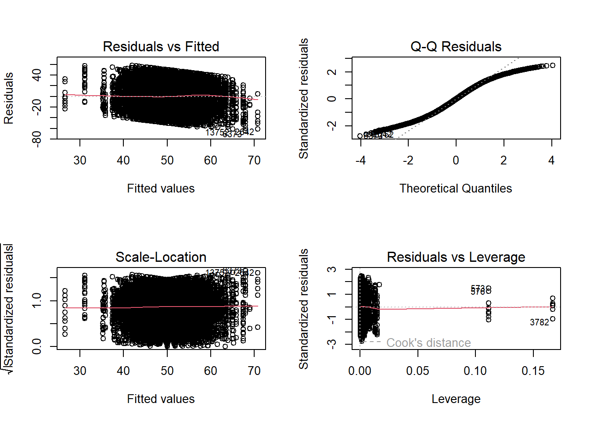
Marginal Contrast Analysis
Following the significant effect of the variables age and level of formal education in the regression model, the marginal means for these variables were computed separately, holding all other variables at their mean values. This was done to examine whether the model estimated different math test scores for an average student who had a teacher in any of the categories of age or formal education, respectively. A visualization of these estimated means is provided in Figure 11, which shows distinct predictions at each subgroup.
For the variable age, a marginal contrast analysis, revealed statistically significant differences in student scores between nearly all age categories and the reference group (teachers under 25 years), except for those above 60 years. Students with teachers under the age of 25 appeared to score approximately 4.20% to 4.80% higher than their peers.
A separate analysis was performed for level of formal education, again while holding all other variables at their means. This analysis found a statistically significant difference was observed between between students whose teachers held a master’s degree or equivalent and those whose teachers held a bachelor’s degree or equivalent. No other pairwise comparison had statistically significant results.
In both analyses, Bonferroni-adjusted p-values were reported to account for multiple comparisons. Full results of these two analyses are presented in Table 6.
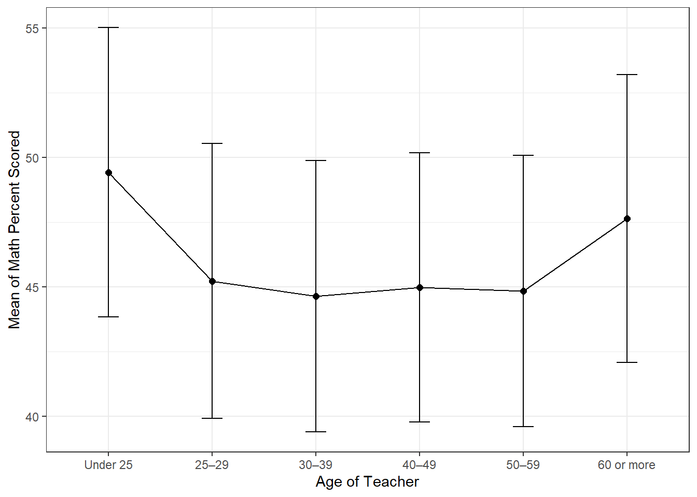
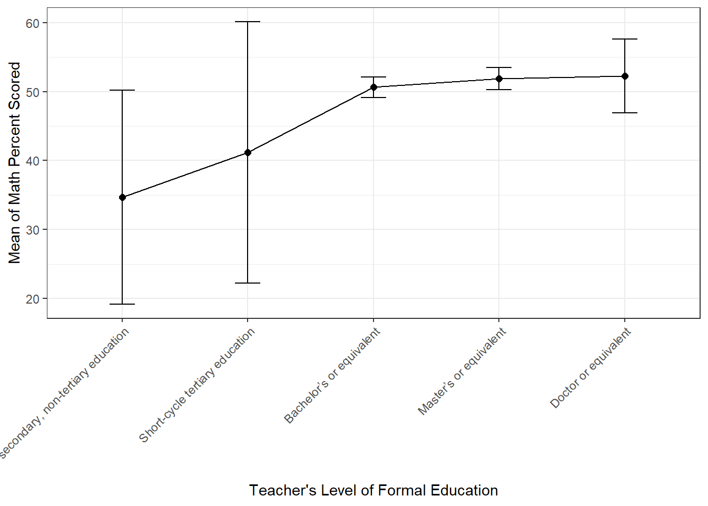
| Level1 | Level2 | Difference | SE | CI_low | CI_high | t | df | p |
|---|---|---|---|---|---|---|---|---|
| 25–29 | Under 25 | -4.207 | 1.040 | -6.247 | -2.168 | -4.043 | 18168 | 0.001 |
| 30–39 | Under 25 | -4.796 | 1.012 | -6.780 | -2.813 | -4.740 | 18168 | 0.000 |
| 40–49 | Under 25 | -4.445 | 1.103 | -6.607 | -2.283 | -4.030 | 18168 | 0.001 |
| 50–59 | Under 25 | -4.594 | 1.266 | -7.076 | -2.111 | -3.627 | 18168 | 0.004 |
| 60 or more | Under 25 | -1.792 | 1.612 | -4.951 | 1.368 | -1.112 | 18168 | 1.000 |
| 30–39 | 25–29 | -0.589 | 0.635 | -1.833 | 0.655 | -0.928 | 18168 | 1.000 |
| 40–49 | 25–29 | -0.238 | 0.738 | -1.684 | 1.208 | -0.322 | 18168 | 1.000 |
| 50–59 | 25–29 | -0.387 | 0.943 | -2.235 | 1.462 | -0.410 | 18168 | 1.000 |
| 60 or more | 25–29 | 2.415 | 1.374 | -0.279 | 5.109 | 1.757 | 18168 | 1.000 |
| 40–49 | 30–39 | 0.351 | 0.529 | -0.685 | 1.388 | 0.665 | 18168 | 1.000 |
| 50–59 | 30–39 | 0.203 | 0.725 | -1.219 | 1.624 | 0.279 | 18168 | 1.000 |
| 60 or more | 30–39 | 3.004 | 1.240 | 0.575 | 5.434 | 2.424 | 18168 | 0.231 |
| 50–59 | 40–49 | -0.149 | 0.549 | -1.225 | 0.927 | -0.271 | 18168 | 1.000 |
| 60 or more | 40–49 | 2.653 | 1.148 | 0.402 | 4.904 | 2.310 | 18168 | 0.313 |
| 60 or more | 50–59 | 2.802 | 1.141 | 0.566 | 5.038 | 2.456 | 18168 | 0.211 |
Marginal Contrast Analysis by Age Group
| Level1 | Level2 | Difference | SE | CI_low | CI_high | t | df | p |
|---|---|---|---|---|---|---|---|---|
| Short-cycle tertiary education | Post-secondary, non-tertiary education | 6.473 | 12.460 | -17.950 | 30.895 | 0.519 | 18168 | 1.000 |
| Bachelor’s or equivalent | Post-secondary, non-tertiary education | 15.930 | 7.878 | 0.487 | 31.372 | 2.022 | 18168 | 0.432 |
| Master’s or equivalent | Post-secondary, non-tertiary education | 17.157 | 7.884 | 1.704 | 32.609 | 2.176 | 18168 | 0.295 |
| Doctor or equivalent | Post-secondary, non-tertiary education | 17.543 | 8.317 | 1.240 | 33.845 | 2.109 | 18168 | 0.349 |
| Bachelor’s or equivalent | Short-cycle tertiary education | 9.457 | 9.646 | -9.450 | 28.364 | 0.980 | 18168 | 1.000 |
| Master’s or equivalent | Short-cycle tertiary education | 10.684 | 9.650 | -8.231 | 29.599 | 1.107 | 18168 | 1.000 |
| Doctor or equivalent | Short-cycle tertiary education | 11.070 | 9.997 | -8.525 | 30.665 | 1.107 | 18168 | 1.000 |
| Master’s or equivalent | Bachelor’s or equivalent | 1.227 | 0.396 | 0.450 | 2.004 | 3.095 | 18168 | 0.020 |
| Doctor or equivalent | Bachelor’s or equivalent | 1.613 | 2.651 | -3.582 | 6.808 | 0.609 | 18168 | 1.000 |
| Doctor or equivalent | Master’s or equivalent | 0.386 | 2.663 | -4.834 | 5.606 | 0.145 | 18168 | 1.000 |
Marginal Contrast Analysis by Age Group
Discussion and Conclusion
The analyses of the TIMSS 2023 data for 4th grade students in the U.S.A. and Canada revealed that both teacher-level and student-level characteristics play a statistically significant role in predicting math percentage scores on the TIMSS 2023.
The student-level explained approximately 21% of the variance in test scores, with gender, country, and students’ attitudes toward learning math showing notable effects. Interestingly, a student’s liking for math was unexpectedly negatively associated with their test scores. The difference-in-differences analysis also revealed statististicaally significant differences across combinations of gender and country. Country level differences seem to have alarger effect as an average 4th grade girl in the U.S.A is estimated to score higher than their male and female Canadian counterparts. Despite this, it is important to recognize that country-level differences may reflect broader cultural and systemic factors. Given the distinct educational cultures, curricula, and teaching practices of the U.S. and Canada, attributing differences in scores solely to country-level factors would require further investigation.
The teacher-level analysis accounted for approximately 5% of the variance in student scores. Notably, having an older teacher was negatively correlated with student performance, and having a teacher with a higher level of formal education had a positive effect. The small effect size of the model (5%) suggest that these factors alone explain a modest proportion of variation in a student’s performace on the TIMSS 2023 math test. This highlights that other factors like school resources, classroom dynamics, teaching practices among others may contribute more substantially to a student’s performance. The marginal contrast analysis showed that only the comparison between students of teachers with master’s vs. bachelor’s degrees yielded statistically significant differences. Additionally, students with teachers under 25 years old scored higher than those with teachers from other age groups.
These findings indicate that, while teacher education remains a key factor in student performance, the small expalinaded variations by the models imply that additional factors should be considered in future research. Policymakers and educators may want to focus on improving teacher qualifications, but also recognize that improving teaching quality in broader terms—including pedagogical practices and teacher-student interactions—will likely have a more profound impact on student performance.
References
Yin, Liqun, and Katherine Reynolds. 2024. “Creating and Interpreting the TIMSS Context Questionnaire Scales.” https://doi.org/10.6017/lse.tpisc.timss.rs2550.